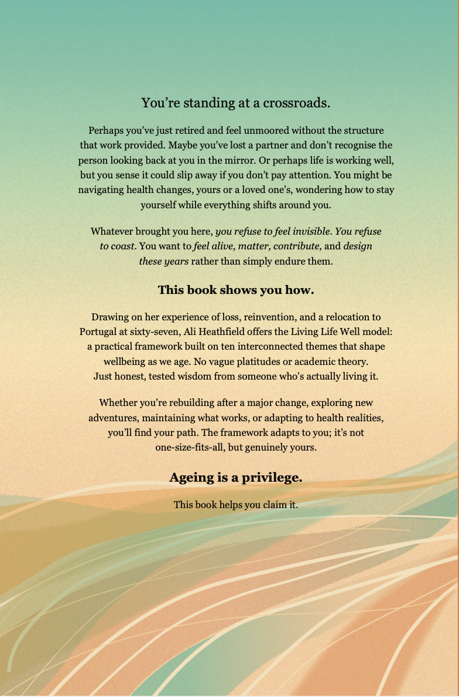

Not Done Yet
Life After 60: Ten Themes to Create What's Possible


Ageing is a privilege. This book helps you claim it.
Buy on AmazonWhat the Book is About
More than just getting through it.
You've reached a point in life where things have shifted. Maybe significantly. Maybe just quietly, in ways that are hard to name. The roles that used to define you have changed. The structure that used to fill your days has loosened, and somewhere in all of that, you're asking: what now?
Not Done Yet is for everyone navigating life after 60 who wants more than just getting through it. It's practical, personal, and grounded in real experience, not a cheerful to-do list, not a five-step formula. It's a thoughtful look at ten themes that shape how we live at this stage, and how you can work with them rather than around them.
Whether you're rebuilding after loss, exploring what a genuinely good later life looks like, holding steady and wanting to stay that way, or navigating health changes (yours or someone you love), this book meets you where you are.
It won't tell you what your life should look like. It'll help you figure out what you want it to look like.
The Ten Themes
The Living Life Well model.
The heart of the book is the Living Life Well model, ten interconnected themes that shape our wellbeing in later life. Think of them as different instruments in an orchestra. Sometimes one plays louder than the others. What matters is noticing when something's out of tune, and knowing how to bring things back into balance.
The Conductors
The inner themes that set the tone for everything else.
The Foundations
The practical conditions that make everything else possible.
The Pillars
The visible themes that make up the fabric of daily life.
A change in one area often creates ripples in others.
Who It's For
If you're still asking what's possible.
This book is for you if you're somewhere in your 60s, 70s, or beyond, and life looks different from how it did a few years ago.
Maybe you've lost a partner, a role, or a version of yourself you relied on. Maybe you're heading into retirement and want to get it right. Maybe life is good and you'd like it to stay that way. Maybe health (yours or someone close to you) has become the thing you're organising everything around.
Whatever brought you here, if you're still asking what's possible for the years ahead, this book is written for you.
The encore is yours to compose. Make it beautiful, make it true, make it yours.
— Ali Heathfield, Not Done YetAbout Ali
Where this came from.
I spent years as an executive coach, working with leaders navigating change, transitions, and the question of what comes next. Then I found myself facing exactly that question myself.
When my husband Brian died, everything shifted. My identity, my structure, my sense of what was possible. I didn't want to just recover. I wanted to rebuild something that was genuinely mine. I went back to studying, completing an MSc in Positive Psychology at Buckinghamshire New University, started painting again, and eventually made my way to Portugal, where I now live part of the time.
The Living Life Well model in this book isn't theoretical. It came out of my own experience, and that of the many people I've worked with who are navigating this same stage of life.
I'm not going to pretend I've got it all worked out. But I've learnt a lot about what helps, what gets in the way, and what it means to age with intention rather than by default.
That's what this book is about.
The Companion Workbooks
Take the work further.
Not Done Yet comes with a series of companion workbooks, practical, structured guides to help you work through the themes at your own pace.
Maintain and Prevent
For when life's good and you want to keep it that way.
Available before end of June 2026Reinvent and Renew
For when you're ready to actively redesign what comes next.
Available before end of June 2026Health Changes
For when health (yours or someone close to you) has become the organising reality of your life.
Available July 2026Stay in Touch
If something here has stayed with you.
You can find Ali writing, thinking out loud, and sharing what she's learning over on Substack, or drop her a message directly. If you'd like to talk about coaching or working together, a free 15-minute tea chat is the place to start. No pressure, no hard sell, just a conversation.